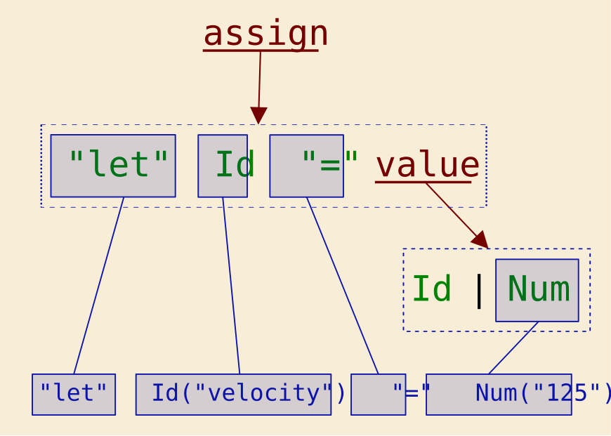
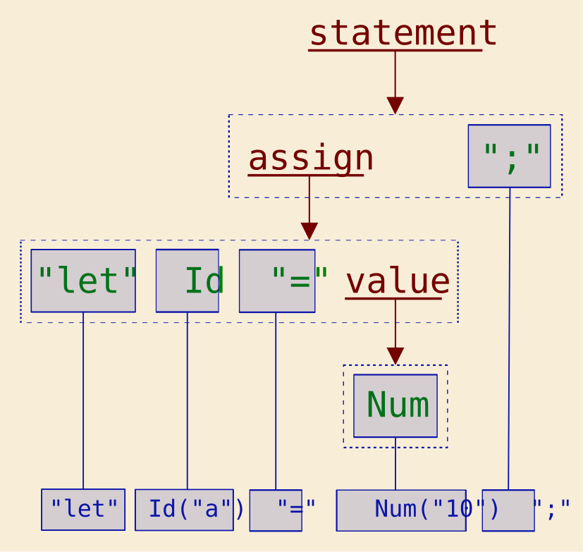
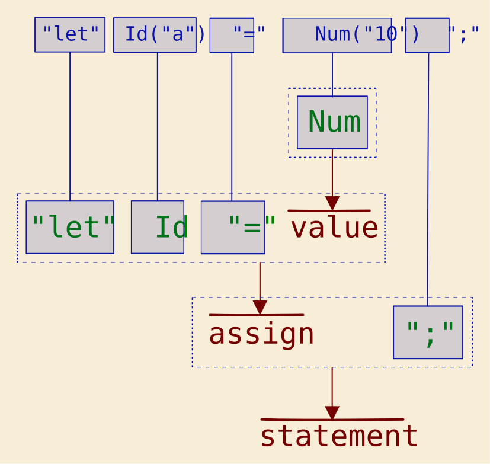

Introduction
This chapter gives a gentle introduction to parsers and how the tool can help you build one. Its only purpose is to make sure the user is aware of how lexers and parsers work, and what the limitations of the grammar are.
If you’re already familiar with those notions, you can skip this introduction.
Components of a Parser
A parser is split in two main components: the lexical analyzer and the syntax analyzer. We also call them respectively lexer, or scanner, and parser. The term “parser” is sometimes used more loosely to refer to both the lexer and the parser, as we did before.
To give an intuitive view, the lexer reads the input and transforms it into a sequence of tokens, which are the basic symbols of the language. Those words can be variable, like a number, or they can be fixed, like a keyword or a punctuation symbol. The parser gets the sequence of tokens from the lexer and verifies that they fit the grammatical rules.
Here is a simple example to illustrate the difference:
Id: [A-Za-z][A-Za-z0-9]*;
Num: [0-9]+;
Space: [ \n\r\t]+ -> skip;
assign -> "let" Id "=" value;
value -> Id | Num;
For the vocabulary, the grammar rules are called production rules or, more simply, productions. The part on the left side of the arrow is the head, and the part on the right is the body. The tokens are also called terminals, especially when they’re considered in a production. The production names, like “assign” and “value”, are referred to as nonterminals, as opposed to terminals.
The tokens recognized by the lexer are Id, Num, "let", and "=". The first two are a little more complicated since their regular expressions can match many different strings. The others are given literally.
The Space terminal is a little special. We must often use something to separate the tokens, because they could otherwise be merged; for example, if the input starts with “letvelocity” instead of “let velocity”, it’ll match Id instead of matching the sequence "let", Id. By introducing Space, we allow the other tokens to be separated by space characters, even allowing for tabs and new lines. The -> skip action makes the lexer discard those tokens, so that the parser gets "let", Id instead of "let", Space, Id, which would be tedious to handle.
The productions used by the parser are assign -> … and value -> …. They specify how the tokens coming from the lexer may be arranged syntactically in the source language. When a production matches a sequence of tokens, we say that it derives the input from the nonterminal on the left-hand side. Some of those terms are somewhat abstract and formal, but we mention them because they’re often used in the context of parsers.
We use the convention that the top nonterminal is the first to be defined. In this case, assign is the top nonterminal.
Let’s see with an example how an input gets parsed:
let velocity = 125
The lexer outputs the following sequence of tokens:
"let", Id("velocity"), "=", Num("125")
The parser determines the parse tree that makes the productions correspond to the input:

- The top nonterminal is
assign. The three leftmost terminals match the input tokens"let",Id, and"=". - The fourth element is the nonterminal
value, which contains two alternative productions:value -> Idorvalue -> Num. The derivationvalue -> Nummatches the input.
The parse tree, also called production graph, is only a representation of the order in which the productions are arranged to match the input (to derive the input). It’s not necessarily an actual object built by the parser, but rather a representation of the parser flow through the productions and the received tokens. Quite commonly, the parser helps build an abstract syntax tree, which better corresponds to the needs of the application. We’ll see how in the next section.
When the parser can’t match the input with the grammar, it generates a syntax error, ideally with enough information to tell the user where it fails and why. Similarly, when the lexer can’t extract any token from the input, it generates a lexical error.
How Parsers Are Used
Parsers are used in any application that needs to read an input in a specific language. It could be a programming language, a configuration file, or an HTML page. Sometimes, they’re written manually, but for more complex parsers, or types of parsers that are hard to write by hand, a parser generator is preferably used.
Parsers are usually known as the first part of a compiler, which reads the source of a program and produces an executable. In a nutshell, a compiler has the following parts:
- a lexer and a parser
- a semantic analyzer, that uses the productions of the parser to build an abstract syntax tree (AST), a representation easier to process
- an intermediate code generator, which, based on the AST, creates a sequence of basic code that we call intermediate representation (IR)
- an optional optimizer, that produces a better sequence of IR
- a code generator, which transforms the IR into machine code for the target architecture (possibly followed by an optimizer for that particular architecture)
We have subtly avoided so far to tell exactly what the parser is supposed to output. In truth, unlike the lexer, the parser doesn’t produce an output in the form of data. In order to build the abstract syntax tree, or more generally, the object that represents the parsed input, the parser interacts with your code each time it has recognized which production applies to the next bit. Your code can then produce the desired output.
This interaction can take several forms, depending on the parser, but it generally comes in one of two common patterns: the listener and the visitor.
In the listener pattern, each time the parser has correctly matched a production, it calls a user-defined action routine. In parser generators like Yacc and Bison, those routines are written in the grammar itself, which can sometimes reduce readability. In other generators, like ANTLR, the generated code provides a base class that can be specialized (inherited) by the user and where each method corresponds to a nonterminal: here, something like exit_assign() and exit_value(). Other methods corresponding to other phases of the parsing may be available, too, like when a nonterminal is about to be parsed, which can be used to initialize some data.
In the visitor pattern, the generated code also provides a base class with methods that correspond to the nonterminals. The top nonterminal visitor is called at some point, and the user code can then inspect the data matched by the parser in that production, and call the visitor of the nonterminals to go deeper. In our example above, the user would call visit_value() from visit_assign(), so that the whole tree is visited by the user code.
The listener approach is more automatic and natural, while the visitor approach allows the user to skip entire parts of the tree that are not relevant. For example, if there are several parsing passes, the first visitor implementation will collect all the declarations, but it will disregard the fine details of the definitions (e.g. not calling visit_value()). In the second pass, it will read everything, already knowing all the names that have been declared, even if that declaration comes later in the input.
At this time, Lexigram generates the code for a listener only, creating a custom trait that you can implement for a listener object. This allows you to intercept the parser flow with the trait methods and to build an abstract syntax tree very efficiently.
Lexicon and Grammar
We saw earlier the specification of a simple language:
Id: [A-Za-z][A-Za-z0-9]*;
Num: [0-9]+;
assign -> "let" Id "=" value;
value -> Id | Num;
You may have already seen the specification of a programming language in one form or another. One that we often see is the Backus–Naur form (BNF), which originated from the collaborative design of ALGOL 58 and evolved to the syntax we know today. Several variants of Extended Backus-Naur form (EBNF) exist, which add regular-expression-like niceties such as repetitions and optional items.
We’ll be using our own language to describe the tokens the lexer must extract, which is the lexicon, and the productions the parser must use, which is the grammar. The syntax we’re using is inspired by ANTLR; it tries to be flexible and easy to read.
Here is what the lexicon of the above example would be; note the names of the terminals are upper camel case:
Let: "let";
Equal: "=";
Id: [A-Za-z][A-Za-z0-9]*;
Num: [0-9]+;
And here is the grammar, in which the names of the nonterminals are snake case, to distinguish them from the terminals:
assign: Let Id Equal value;
value: Id | Num;
We like to separate both when we generate a parser with Lexigram, for several reasons:
- Using string literals for keywords like “let” and punctuation like “,” or “;” introduces a risk of discrepancy if there’s a typo somewhere. If each statement is ended by a semicolon, you may have to repeat that string literal in several productions, and if you decide to change that later, there’s a risk to miss some of them.
- Using string literals doesn’t give them a name, which is annoying when you have to process terminals in the code, as you’ll see later.
- Using string literals doesn’t specify in which order they’re defined. This can be limiting when the order is used to clarify ambiguities. Above, we see that
LetandIdoverlap since “let” matches[A-Za-z][A-Za-z0-9]*, but sinceLetis defined first, the lexer knows that “let” must be extracted as theLettoken. Having a full lexicon improves the clarity and the precision. - The tool allows to generate only a lexer; later, it will allow the user to use another, external lexer, so having separate lexicons and grammars is necessary.
But for the sake of conciseness, we’ll often use the simplified form with string literals in small examples, where the concerns above don’t really apply. When we do that, we’re using -> in the grammar instead of : (you may have spotted that clue earlier already).
Where to Draw the Line?
Knowing where the lexer’s job ends and where the parser’s job is taking over isn’t always easy when you’re not used to it. For instance, if you declare a variable, it’s possible to rely on the lexer to scan the whole declaration:
Decl: 'let' [ \t]+ [_a-z][_0-9a-z0-9]* [ \t]* ':' [ \t]* [_a-z][_0-9a-z0-9]*;
All there is to do, once the parser (if you still need one) receives a Decl token, is to read the input attributes that come with it, remove the “let”, and do a split on space and colon characters—there are efficient methods for that in the standard library, after all.
Of course, you’ll have to forbid any comment inside that section of source code.
Another way is to slice it into smaller chunks and rely on the parser to assemble them:
// lexicon
Colon: ':';
Let: 'let';
Id: [_a-z][_0-9a-z0-9]*;
SkipSpaces: [ \t]+ -> skip;
// grammar
declaration: Let Id Colon Id;
At first glance, it’s more work, but you won’t have to split anything in the parser. In the listener’s exit_declaration() method, you’ll receive the strings for the variable and the type, and you don’t have to worry about the rest. If you decide your statements can be split across several lines, it’s fine: just add “\n” once to SkipSpaces. And if you want to support comments everywhere, just add this to the lexicon:
SkipComment: '/*' .*? '*/' -> skip;
There are no formal rules that tell how to separate what should be in the lexicon and what should be in the grammar, but you can use a few guidelines:
- As a general rule of thumb, split the source into tokens that represent simple words of the language, words that are easy to manipulate for the parser.
- If a token contains characters that must be discarded later by the parser, you should consider reworking that token’s definition and let the lexer discard what’s possible.
- If a variable pattern is repeated in a token, is there a way to split it, like we did with
[_a-z][_0-9a-z0-9]*above? If not, we’ll see a way to define those patterns so they can be reused in the lexicon when we discuss that part more in detail. - If a token is not useful in a grammar, maybe it can be skipped entirely by the lexer. You have to make sure it’s not used to distinguish two grammar productions, though.
- If several tokens are processed identically by the parser, like integers and floating points if there’s only one numerical type, or like strings between quotes or double quotes (e.g. in Python), it’s better to regroup them in the lexer and issue a single token to reduce the work in the parser.
Don’t take those rules too literally; always consider the work on both sides and in all the situations. For example, if you allow escape codes and Unicode values in your string literals, how are you going to do? As single characters, they may look like this:
- ‘\n’, ‘\r’, ‘\’
- ‘\u{20}’, ‘\u{00A9}’
But they could also be in the middle of a string:
- “Value:\n\u{25ba} “
When they’re single characters, you could decide to return different tokens, depending on whether they’re regular characters, escape codes, or Unicode hex values. You could strip the unnecessary and just return a Unicode token with the hex value in attribute, in a string that’s ready to be converted to an integer by the parser.
But that would complicate the parser. Instead of handing the character as a token, you’ll need several alternatives:
char_value: Char | Escape | Unicode;
Then, you’ll need to implement its listener method:
let chr = match context {
CtxCharValue::V1 { char } => { ... }
CtxCharValue::V2 { escape } => { ... }
CtxCharValue::V3 { unicode } => { ... }
}
In fact, this isn’t too bad since each branch knows how to handle the attribute: take as-is, unescape, or convert the hex code to a Unicode character. If you process only single characters, it’s a good way to do it, but what if you must handle string literals, too?
Another way to deal with it, since there is some processing that goes beyond the job of the lexer, is to let those codes in string and character literals, and have a Rust method that unescapes those codes. That method can be used for both characters and strings. If you decide to add more escape codes, you’ll just have to add them in one line in the lexicon, and to update that method; the parser won’t require an additional alternative in the rule and a new branch in the listener implementation.
Note
At this point, you may have been asking yourself how Lexigram was parsing the lexicon and the grammar. That’s right, it has a lexer and a parser of its own! Two, actually, since the lexicon and the grammar are two different languages.
Processing the escape codes and Unicode values is actually done as described above; you can see how it’s done by checking Lexi’s lexicon, grammar, and listener implementation (Lexi is the lexer generator; Gram is the parser generator).
And, before you ask, yes: Lexigram generates its own lexer and parser.
There’s Parser and Parser
We have another important matter to tackle: there are different parser types, which support different classes of grammars, and so different subsets of possible languages. It’s worth knowing the basics in order to choose the right parser for the desired language, or, conversely, to design the language so that its grammar is supported by a type of parser.
There are several ways to classify parsers, but if we consider a practical perspective, the derivation order, there are three classes of parsers for context-free grammars: top-down, bottom-up, and universal. The most common parser types are top-down and bottom-up because they’re more efficient.
Currently, Lexigram generates a top-down parser. More precisely, a table-driven LL(1) parser, which belongs to the category of top-down parsers. As we’ll see, those parsers can’t process left recursion (a -> a B | C) nor alternative productions beginning with the same symbols (a -> B C | B D), but it’s possible to systematically transform the grammar to remove them. Thankfully, Lexigram performs these transformations automatically and as transparently as possible, so that you don’t have to bother about those limitations.
In practice, top-down parsers are widely used in compilers because they’re relatively simple to make and to maintain. They’re often written manually using a recursive implementation, in which case they’re called recursive descent parsers. Some generators, like ANTLR, also write a recursive descent parser instead of a non-recursive, table-driven one.
The next two sections give a general idea of each parser type.
Top-Down Parsers
A top-down parser starts from the top production and deduces the items from the grammar, looking at the next symbol(s) to predict the production when there are several alternatives.
Let’s illustrate that with an example:
Id: [A-Za-z][A-Za-z0-9]*;
Num: [0-9]+;
statement -> assign ";" | print ";";
assign -> "let" Id "=" value;
print -> "print" value;
value -> Id | Num;
which we can rewrite with each production alternative on its own line:
Id: [A-Za-z][A-Za-z0-9]*;
Num: [0-9]+;
statement -> assign ";";
statement -> print ";";
assign -> "let" Id "=" value;
print -> "print" value;
value -> Id;
value -> Num;
A top-down parser processes the input “let a = 10;” as follows:
- The top nonterminal is
statement, but there are two alternatives. The first token is “let”, sostatement -> assign ";"is predicted sinceassignstarts with that token. The symbolsassignand";"of the production are queued to check that the incoming tokens match them. - The next symbol in the queue is the nonterminal
assign, and the pending token is still"let", so the parser predicts the productionassign -> "let" Id "=" value.assignis removed from the queue and replaced with the symbols of the production body, so the queue is now"let",Id,"=",value,";". - The next 3 tokens match the terminals in the queue:
"let",Id("a"), and"=". They’re removed from the queue, leavingvalueand";". - Since the next symbol in the queue is a nonterminal,
value, the parser looks at the incoming token,Num("10"), and predicts that the next production isvalue -> Num.valueis replaced byNumin the queue. - The
Numsymbol of the queue matches the incoming tokenNum("10"), so it’s removed. The queue now contains";". - The next token from the lexer is
";". It matches the last item in the queue, so it’s removed. - The queue is empty, and there are no more tokens from the lexer, so the parser has finished and the result is successful.
The equivalent parse tree is shown below:

You can see that it’s indeed built from the top down, by incrementally attaching nonterminal branches and terminal leaves following a preorder, depth-first search.
Another way to see it is that the input is derived from left to right, matching the tokens in that order with the productions.
The “LL” in “LL(k) parser” stands for “scanning Left-to-right, Leftmost derivation”, and k is the number of tokens the parser can look ahead to predict the next derivation. Similarly, an LL(k) grammar needs to look at maximum k following tokens to the right to predict a unique derivation. So an LL(k) parser can parse an LL(k) grammar (and also any LL(i) grammar, for i < k). When k isn’t mentioned, it normally means LL(1).
Note
A more restrictive subclass of grammars is sometimes mentioned: SLL, for Simple LL. Substantially, an SLL grammar requires no empty production (
a -> A | ε), and the production alternatives of a given nonterminal shouldn’t start with the same k terminals (a -> A b | A c). The SLL parsers are somewhat easier to build, but the restrictions are significant, so we won’t spend more time on them.
The grammar above can be parsed by looking only at the next token, so it’s an LL(1) grammar, which can be parsed by an LL(1) parser. Easy enough.
Implementations
LL(k) parsers can be implemented in different ways, the most common being either recursive-descent or table-driven parsers.
- Recursive-descent parsers
This implementation has one method for each nonterminal. Each method begins by inspecting as many lookahead tokens as it requires to predict the production when there are several alternatives. Then, for each symbol of the production:
- if it’s a terminal, the method consumes the next token and verifies that it matches;
- if it’s a nonterminal, it calls the corresponding method.
Here is an example of pseudocode for the recursive-descent implementation of the first two nonterminals:
#![allow(unused)]
fn main() {
impl Parser {
fn statement(&mut self) -> Statement {
let stmt = match self.peek_token() {
Terminal::Let => self.assign(),
Terminal::Print => self.print(),
_ => panic!("syntax error"),
};
self.match_token(Terminal::Semicolon);
stmt
}
fn assign(&mut self) -> Statement {
self.match_token(Terminal::Let);
let id = self.match_token(Terminal::Id);
self.match_token(Terminal::Equal);
let value = self.value();
// process id, value
Statement::Assign { .. }
}
// ...
}
}Many compiler projects start with a recursive-descent parser because it’s intuitive to write, and it’s easy to increase the lookahead capability without changing much. The Rust compiler is written that way. Another advantage is that you don’t depend on a tool.
The drawbacks are the lack of visibility of the grammar, the difficulty to change it, and the risk of overflowing the stack. It also requires a mechanism to exit gracefully if you meet syntax errors or if you want to abort the parsing.
Table-driven parsers try to address those issues by using a stack-based finite state machine (also called pushdown automaton) and a single loop. The grammar is transformed into a parsing table, which predicts the next production as a function of the nonterminal on the stack and the next token. A local stack stores the pending terminals that must match the incoming tokens and the nonterminals that must be transformed by predicting their production.
- If a terminal is on the stack, it’s popped and must match the next token.
- If a nonterminal is on the stack, it’s popped, and the table is used to predict the production, whose symbols are then pushed on the stack.
Here is the parsing table for the grammar above:
| Id | Num | “;” | “let” | “=” | “print” | $ | |
|---|---|---|---|---|---|---|---|
| statement | . | . | . | 0 | . | 1 | . |
| assign | . | . | . | 2 | . | . | . |
| . | . | . | . | . | 3 | . | |
| value | 4 | 5 | . | . | . | . | . |
where the numbers are the indices of the production alternatives:
0: statement -> assign ";";
1: statement -> print ";";
2: assign -> "let" Id "=" value;
3: print -> "print" value;
4: value -> Id;
5: value -> Num;
Here’s the pseudocode of the simplified parser loop, supposing the lexer sends a Terminal::End at the end of the input (often represented as $):
#![allow(unused)]
fn main() {
impl Parser {
fn parse(&mut self) {
let mut stack = vec![Terminal::End, self.top_nonterminal];
while let Some(stack_sym) = stack.pop() {
match stack_sym {
Terminal(t) => {
self.match_terminal(stack_sym);
}
Nonterminal(nt) => {
let predicted = self.get_table(stack_sym, nt);
stack.extend(predicted);
}
}
}
}
}
}In reality, Lexigram’s loop is a little more complex because it handles the re-synchronization after encountering syntax errors and other types of symbols pushed on the stack to call the action routines.
A website that calculates the table of an LL(1) parser can be found at this URL. It also shows step by step how the input is parsed.
Limitations
Because the parser relies on the next token to decide what to do, top-down parsers suffer from a few limitations.
- Elimination of left recursion
Left recursion is not supported. In list -> list "," Id | Id, the parser can’t predict an alternative when list is the current nonterminal: in order to determine it, it must first know what to predict for its first symbol, which is list itself. This generates an infinite, recursive loop that it can’t solve.
The grammar must be changed to work around the problem using right recursion, which is fine for LL parsers:
list -> Id list_1;
list_1 -> "," Id list_1 | ε;
where ε is the symbol for “nothing”, meaning here the end of the “loop”.
- Left factorization
An LL(1) can only look at the next token to predict the next production. If several alternatives begin with the same terminal, like a -> A B | A C, the parser can check that the next token is A but it can’t see beyond; it would require an LL(2) parser.
It’s also possible to transform the grammar to work around the limitation:
a -> A a_1;
a_1 -> B | C;
- Ambiguity
When there is both left and right recursion, the grammar is ambiguous for any class of parser. The classic example is the expression grammar:
e -> e * e | e - e | Id;
Firstly, there is no information about the associativity of -. For example, with the input “a - b - c”, it is unclear whether the correct derviation is
-
e -> (e -> Id("a")) - (e -> (e -> Id("b")) - (e -> Id("c")))more simply,
a - (b - c) -
e -> (e -> (e -> Id("a")) - (e -> Id("b"))) - (e -> Id("c"))more simply:
(a - b) - c
Semantically, they’re not the same! 4 - (3 - 2) = 3, but (4 - 3) - 2 = -1.
Secondly, there is no information about the relative precedence of * and -. The input “a - b * c” can be either
a - (b * c)(a - b) * c
The problem of ambiguity is more delicate to solve in the case of top-down parsers. Several techniques exist, that depend on the implementation:
- Handwritten parsers usually apply a technique called precedence climbing, or Pratt parsing, which is equivalent but more general. Both methods use bottom-up parsing for the ambiguous productions, inside a top-down parser.
- Table-driven parsers use Clarke’s technique, which modifies the grammar. That’s how Lexigram deals with ambiguous rules, since it better fits the table implementation than precedence climbing/Pratt.
This is only a general rule; there are exceptions: the ANTLR generates a recursive descent parser where the ambiguities are solved using Clarke’s technique.
As we said earlier, Lexigram modifies the grammar automatically in those three situations. Other parser generators, like ANTLR, do it too, but some generators will expect you to provide an LL(k) grammar. Either way, it’s worth keeping the grammar limitations in mind, because those transformations, even if they’re automatic, create extra nonterminals.
We’ll come back on those transformations and on the performance aspects of a grammar when we discuss how Lexigram works.
Bottom-Up Parser
A bottom-up parser starts from the tokens and deduces the production from them. It accumulates the incoming tokens until it recognizes a production and reduces that part of the input to a nonterminal. Then, it checks if further reductions can be made, consuming more tokens if necessary.
Let’s take the same grammar again:
Id: [A-Za-z][A-Za-z0-9]*;
Num: [0-9]+;
statement -> assign ";";
statement -> print ";";
assign -> "let" Id "=" value;
print -> "print" value;
value -> Id;
value -> Num;
A bottom-up parser processes the input “let a = 10;” as follows:
- The parser needs to consume
Let,Id("a"),"=", andNum("10")before it can make its first reduction:value -> Num("10"). - The stack is
Let,Id("a"),"=",value. The parser recognizes the productionassign -> "let" Id "=" value. - The stack is
assign. There are no further reductions, so the parser takes the next token. - The stack is
value,";". The parser recognizesstatement -> assign ";". - The stack is
statement, and the end of the input has been reached.statementis an acceptable result, so the parser has finished and the result is successful.

This time, you can see that the syntax tree is built from the bottom up, by discovering the terminal leaves first and incrementally creating nonterminal branches to attach them.
We can also see it as the reduction of the input, where symbols matching the right-hand side of a production are replaced by the left-hand side.
The main classes of bottom-up parsers are
- LR(k), where the first L stands for scanning Left to right, and the R for Rightmost derivation. k is the number of look-ahead tokens, which is in practice 0 or 1. So, in comparison to the LL parser which starts at the top of the syntax tree and always derives the leftmost nonterminal first, the LR parser starts at the bottom and always derives (in reverse) the rightmost nonterminal first.
- SLR(k) is a Simple LR. This class of parsers has fewer states than the equivalent LR for the same grammar, but they can handle a smaller set of grammars.
- LALR stands for Look Ahead LR. Without going into details, this class of parsers improves on SLR by using local look-ahead, allowing them to handle a larger set of grammars with the same number of states as the equivalent SLR parsers. In practice, LALR parsers are often preferred to the other classes.
The bottom-up parsers are table-driven, following a mechanism very similar to table-driven LL parsers. Computing the table of an LL parser is a little tedious, but it’s a lot of work for bottom-up parser, even LALR, so this task is almost always done by a tool.
A website that calculates the table can be found at this URL for an LR(1) parser, and at this URL for an LALR(1) parser. You can see the difference in the number of state for the default grammar shown as an example.
Since Lexigram currently generates top-down parsers only, we won’t talk any further about bottom-up parsers. We’ll add more when Lexigram supports them.